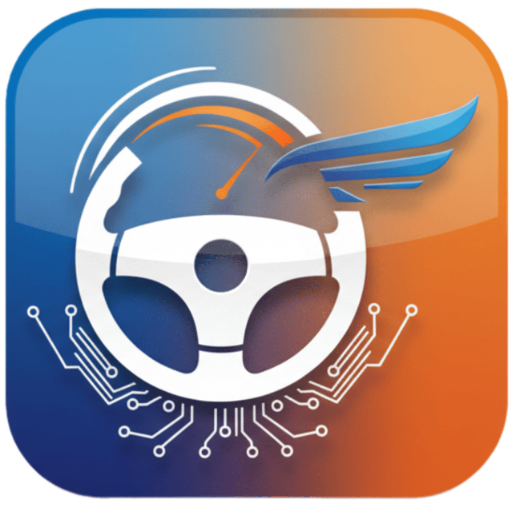

StartDrive
Добавьте веб-приложение на главный экран — откроется с иконкой и без адресной строки.
Открыть StartDrive
Android (Chrome)
- Нажмите кнопку выше или откройте сайт в Google Chrome.
- Всплывающее окно: нажмите Установить. Или меню ⋮ → Установить приложение / Добавить на экран «Домой».
- На рабочем столе появится ярлык с иконкой StartDrive.
iPhone / iPad (Safari)
- Откройте эту страницу или StartDrive в браузере Safari (не встроенный браузер мессенджера).
- Нажмите кнопку Поделиться □↑ внизу экрана.
- Прокрутите список и выберите На экран «Домой» → Добавить.
После установки запускайте приложение с рабочего стола — данные подгружаются с сервера, как на сайте.